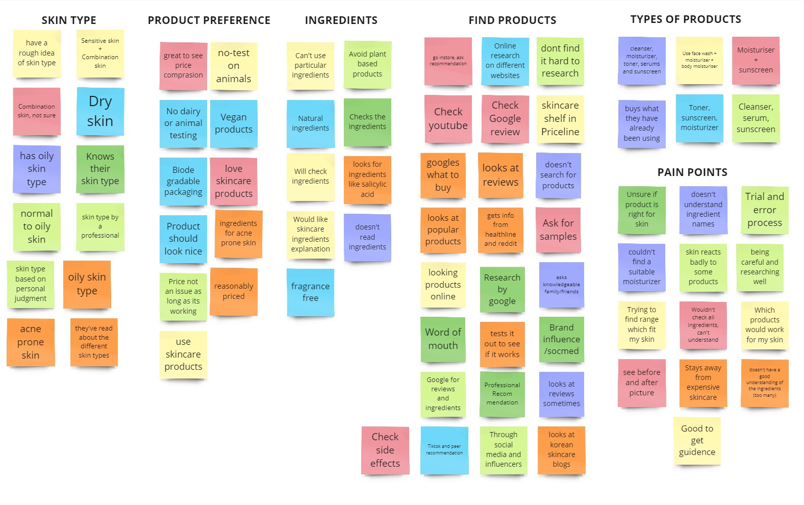

In this case study, we delve into the design of a skincare recommendation app. My team, Jacqueline Ongsip, Yin Jiayu and I spearheaded the design process. Our responsibilities encompassed executing comprehensive user research, creating wireframes, and rigorously testing the resulting prototypes.
After conducting interviews, we discovered that users struggle to choose the appropriate skincare products for their routine. This difficulty largely stems from a lack of understanding of the ingredients in these products. Additionally, they often have specific preferences or skin concerns they would like to target, and a quick Google search isn't enough to accurately describe the product.